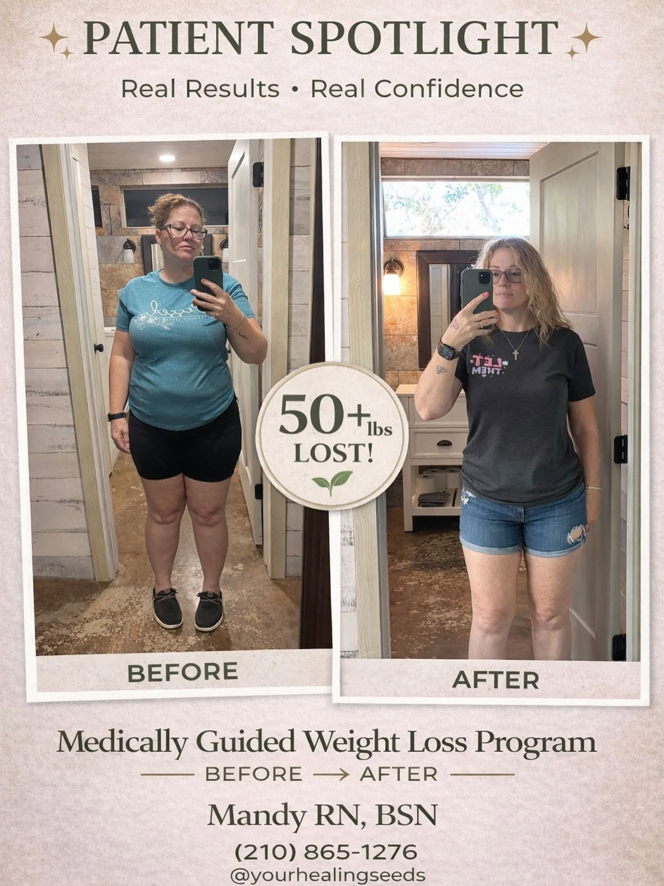
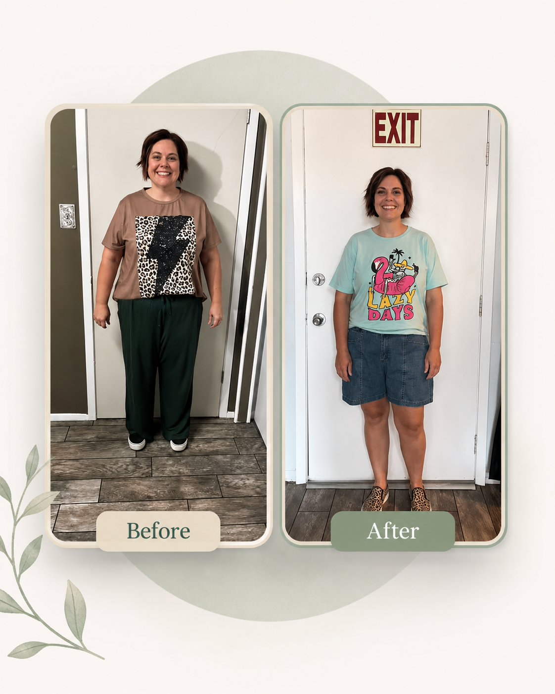

What Is Medical Weight-Loss Guidance?
This provider-led service supports appetite control, metabolism, energy, and long-term wellness through a personalized plan based on your health history and goals.
Personalized consultation for prescription and peptide therapy options, weekly support, and whole-person lifestyle guidance.


This provider-led service supports appetite control, metabolism, energy, and long-term wellness through a personalized plan based on your health history and goals.
Your consultation may include health history, lifestyle review, medication discussion, peptide therapy options when appropriate, optional labs, and accountability planning.

Call or text Mandy to book Medical Weight-Loss Guidance, ask questions, or make sure this is the right fit.